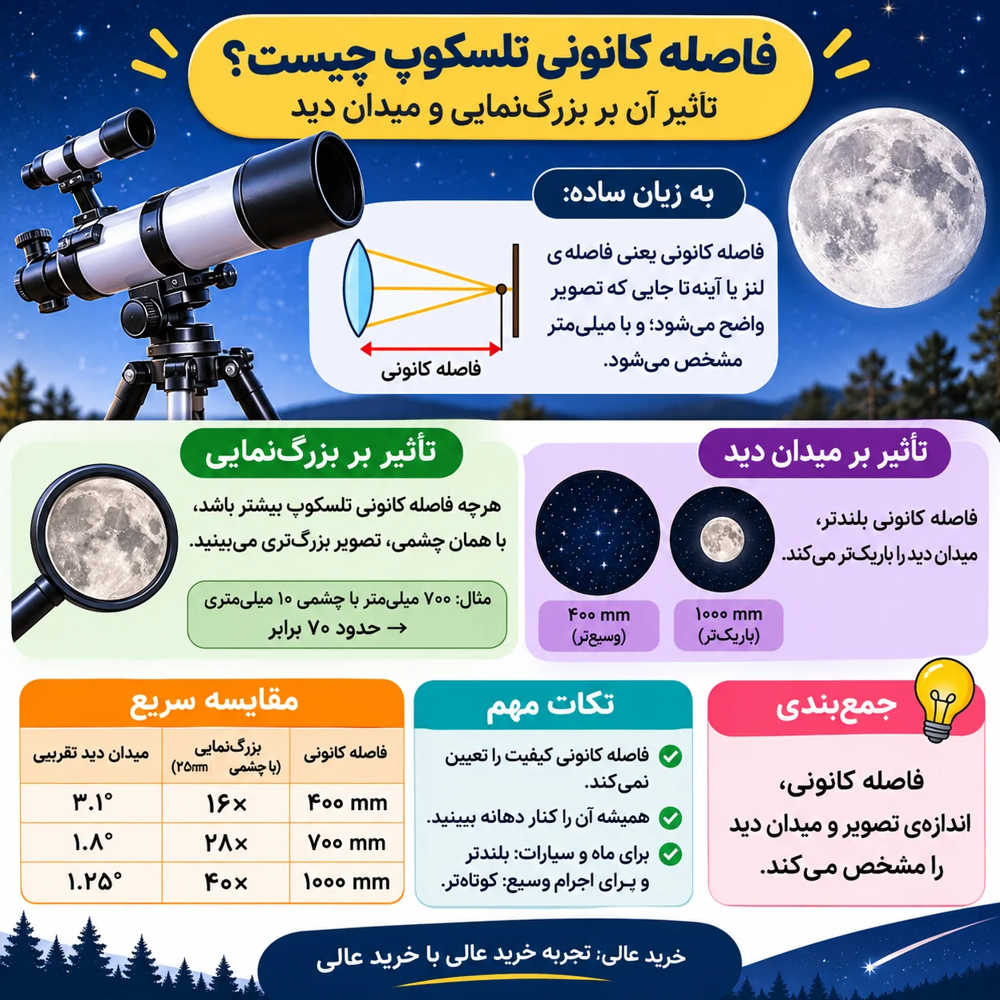

فاصله کانونی به زبان خیلی ساده
تلسکوپ نور را از آسمان میگیرد و جایی در داخل خودش جمع میکند تا تصویر بسازد. فاصلهی کانونی یعنی فاصلهی لنز یا آینهی اصلی تا همان نقطهای که تصویر ساخته میشود. اندازهی آن با میلیمتر بیان میشود.
یک آزمایش ساده را تصور کن: ذرهبینی را مقابل یک پنجرهی روشن بگیر و تصویر پنجره را روی یک کاغذ بیاور. هرجا تصویر واضح شد، فاصلهی ذرهبین تا کاغذ همان «فاصلهی کانونی» ذرهبین است. (این کار را فقط با پنجره انجام بده. هرگز ذرهبین را مقابل خورشید نگیر.) هرچه این فاصله بیشتر باشد، تصویر روی کاغذ بزرگتر میشود.
تلسکوپ هم همینطور است. با یک چشمی مشخص، فاصلهی کانونی بلندتر یعنی تصویر بزرگتر.
یک مثال عددی: تلسکوپی با فاصلهی کانونی ۷۰۰ میلیمتر را در نظر بگیر.
- با چشمی ۲۵ میلیمتری: ۷۰۰ تقسیم بر ۲۵ میشود ۲۸ برابر
- با چشمی ۱۰ میلیمتری: ۷۰۰ تقسیم بر ۱۰ میشود ۷۰ برابر
اگر فاصلهی کانونی تلسکوپ ۱۰۰۰ میلیمتر بود، همان چشمی ۱۰ میلیمتری ۱۰۰ برابر میداد.
اما همهچیز خوب نیست. فاصلهی کانونی بلندتر یعنی تصویر بزرگتر، ولی بخش کوچکتری از آسمان دیده میشود.
هنگام خرید: فاصلهی کانونی بیشتر یعنی تلسکوپ بهتر نیست. این عدد بیشتر نوع تصویر را مشخص میکند: بزرگتر و باریکتر، یا کوچکتر و وسیعتر.
فاصله کانونی تلسکوپ چیست؟ تأثیر آن بر بزرگنمایی و میدان دید
در مشخصات تلسکوپها عددهایی مثل ۴۰۰، ۷۰۰ یا ۱۰۰۰ میبینید که کنار دهانه نوشته شدهاند. این عدد فاصلهی کانونی است. در این مقاله میفهمید چه کاری انجام میدهد و چرا «بیشتر» همیشه به معنای «بهتر» نیست.
تعریف علمی
فاصلهی کانونی تلسکوپ، فاصلهی لنز یا آینهی اصلی تا نقطهای است که نور در آن متمرکز میشود. واحد آن میلیمتر است. فاصلهی کانونی با قطر دهانه فرق دارد: دهانه مقدار نور ورودی را تعیین میکند و فاصلهی کانونی اندازهی تصویر را.
روش خواندن عدد
در بسیاری از تلسکوپهای مبتدی، مثل ۷۰/۷۰۰، عدد دوم فاصلهی کانونی است. طول لوله لزوماً با آن برابر نیست. در سیستمهای اپتیکی تاشده، مسیر نور بسیار بلندتر از اندازهی ظاهری دستگاه است. یعنی ممکن است لولهای کوتاه، فاصلهی کانونی بلندی داشته باشد.
تأثیر بر عملکرد
- بزرگنمایی: بزرگنمایی از تقسیم فاصلهی کانونی تلسکوپ بر فاصلهی کانونی چشمی به دست میآید.
- میدان دید: با یک چشمی مشخص، فاصلهی کانونی بلندتر میدان دید باریکتر و بزرگنمایی بیشتری میدهد. میدان دید حقیقی تقریباً برابر است با میدان دید ظاهری چشمی تقسیم بر بزرگنمایی.
مقایسه (چشمی ۲۵ میلیمتری، میدان ظاهری فرضی ۵۰ درجه)
| فاصلهی کانونی | بزرگنمایی | میدان دید حقیقی (تقریبی) | مناسب برای |
|---|
| ۴۰۰ میلیمتر | ۱۶ برابر | حدود ۳٫۱ درجه | خوشهها و مناطق وسیع آسمان |
| ۷۰۰ میلیمتر | ۲۸ برابر | حدود ۱٫۸ درجه | رصد عمومی، قاب کامل ماه |
| ۱۰۰۰ میلیمتر | ۴۰ برابر | حدود ۱٫۲۵ درجه | ماه و سیارات |
| ۱۲۰۰ میلیمتر | ۴۸ برابر | حدود ۱٫۰ درجه | ماه و سیارات با بزرگنمایی بیشتر |
برای مقایسه: قطر ظاهری ماه حدود نیم درجه است، پس با همهی این حالتها کامل جا میشود.
مزایا و محدودیتها
مزیتها و کاربردها
فاصلهی کانونی کوتاه برای رصد اجرام وسیع مثل سحابیهای گسترده و خوشههای باز مناسبتر است، و فاصلهی کانونی بلند برای ماه، سیارات و بعضی اجرام فشرده. محدودیتها:
محدودیتها
- فاصلهی کانونی بلند، یافتن جرم را سختتر میکند چون میدان دید باریک است.
- با فاصلهی کانونی بلند، لرزش پایه هم بزرگتر دیده میشود.
- فاصلهی کانونی بلند جای دهانهی کوچک را نمیگیرد. برای جزئیات سیارات، دهانه تعیینکننده است.
- از تقسیم فاصلهی کانونی بر دهانه، نسبت کانونی (f/) به دست میآید که در مقالهی مستقل میآید.
اشتباهات رایج خریداران
- «فاصلهی کانونی بلندتر یعنی تلسکوپ بهتر.» این عدد کیفیت را نشان نمیدهد.
- «لولهی بلند یعنی فاصلهی کانونی بلند.» در طراحیهای تاشده اینطور نیست.
- «با فاصلهی کانونی بلند هر چیزی را میتوان خیلی بزرگ دید.» بزرگنمایی مفید به دهانه و آسمان هم بستگی دارد.
نکات برای هر گروه
برای کودک و نوجوان فاصلهی کانونی متوسط (حدود ۴۰۰ تا ۷۰۰ میلیمتر) معمولاً راحتتر است: یافتن جرم سادهتر است و پایه کمتر میلرزد. بزرگسال مبتدی که بیشتر ماه و سیارات میخواهد میتواند فاصلهی کانونی بلندتر را در نظر بگیرد، به شرط اینکه دهانه و پایه هم همراهی کنند.
راهنمای تصمیمگیری
اگر بیشتر ماه و سیارات میخواهید، فاصلهی کانونی بلندتر مناسبتر است. اگر خوشهها و مناطق وسیع میخواهید، فاصلهی کانونی کوتاهتر. و اگر هنوز مطمئن نیستید، فاصلهی کانونی متوسط و چند چشمی متنوع انتخاب امنتری است.
جمعبندی
فاصلهی کانونی اندازهی تصویر و میدان دید را تعیین میکند، نه کیفیت را. همیشه آن را کنار دهانه و چشمی ببینید.

پرسشهای متداول
فاصلهی کانونی ۷۰۰ میلیمتر خوب است؟
برای مبتدی، با چشمیهای رایج، بزرگنماییهای متنوعی میدهد و بهخصوص برای ماه و سیارات مناسب است.
فاصلهی کانونی را میشود تغییر داد؟
خود تلسکوپ ثابت است. با تعویض چشمی بزرگنمایی تغییر میکند. ابزارهایی مثل بارلو هم فاصلهی مؤثر را بیشتر میکنند.
فرق فاصلهی کانونی با دهانه چیست؟
دهانه نور و جزئیات را تعیین میکند. فاصلهی کانونی اندازهی تصویر و میدان دید را.